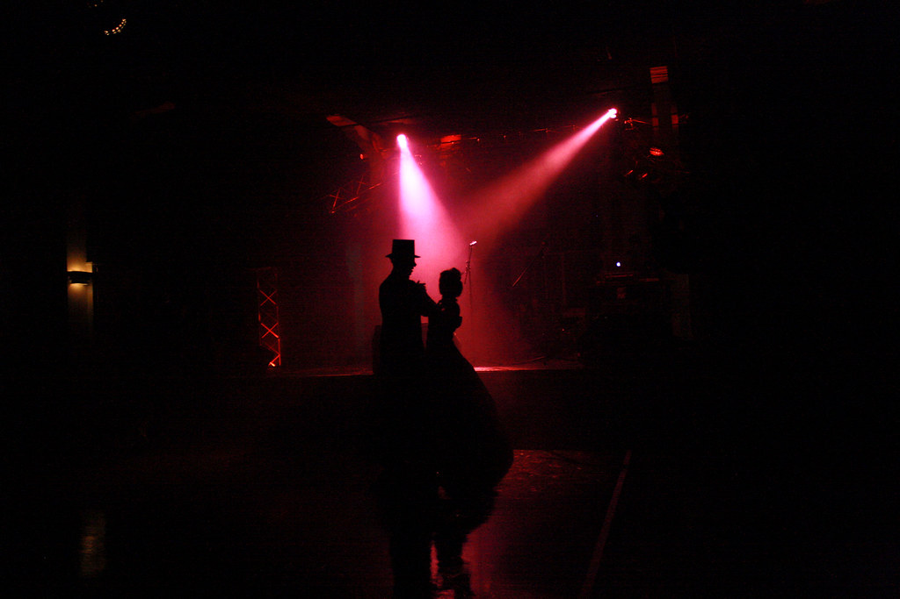

Музыка · 30-бөлім · Би Music · Section 30 · Dance Музыка · Раздел 30 · Танец
Би — музыкаға қозғалу. Әр бидің өз қарқыны мен өлшемі бар: вальс, полька, мазурка, полонез. Dance is movement to music. Each dance has its own tempo and meter: waltz, polka, mazurka, polonaise. Танец — движение под музыку. У каждого танца свой темп и размер: вальс, полька, мазурка, полонез.
Би (танец) — музыкаға сай қозғалу. Адам музыканың ырғағын денесімен бейнелейді. A dance is movement to music. A person expresses the rhythm of the music with the body. Танец — это движение под музыку. Человек выражает ритм музыки телом.
Би музыкасында анық ырғақ пен белгілі бір өлшем болады. Dance music has a clear rhythm and a definite meter. Танцевальная музыка имеет чёткий ритм и определённый размер.
Дәл осы ырғақ пен өлшем бойынша бидің қай түрі екенін тануға болады. It is exactly by this rhythm and meter that a dance can be recognised. Именно по ним танец узнаётся.
💡 Әр бидің өз сипаты, қарқыны және өлшемі бар — осы ерекшеліктер биді танымал әрі ажыратымды етеді. 💡 Each dance has its own character, tempo and meter — these features make a dance recognisable. 💡 У каждого танца свой характер, темп и размер — это и создаёт узнаваемость.

| БиDanceТанец | ӨлшемMeterРазмер | СипатыCharacterХарактер | Шығу тегіOriginПроисхождение |
|---|---|---|---|
| ВАЛЬСWALTZВАЛЬС | 3/4 | баяу, айналмалы, лирикалықsmooth, whirling, lyricalплавный, кружащийся, лиричный | австриялық / немісAustrian / Germanавстрийский / немецкий |
| ПОЛЬКАPOLKAПОЛЬКА | 2/4 | жылдам, көңілді, секірмеліfast, cheerful, bouncyбыстрый, весёлый, прыгающий | чехCzechчешская |
| МАЗУРКАMAZURKAМАЗУРКА | 3/4 | 2-ші немесе 3-ші үлеске екпінмен, тәкаппарaccent on the 2nd or 3rd beat, proudс акцентом на 2-ю или 3-ю долю, гордая | полякPolishпольская |
| ПОЛОНЕЗPOLONAISEПОЛОНЕЗ | 3/4 | салтанатты шеру, айбындыa solemn procession, majesticторжественное шествие, величавый | полякPolishпольский |
📌 Әр бидің өз сипаты, қарқыны және өлшемі бар — дәл осы оны тануға мүмкіндік береді. 📌 Each dance has its own character, tempo and meter — this is exactly what makes it recognisable. 📌 У каждого танца свой характер, темп и размер — это и создаёт узнаваемость.
Әр бидің өзіне тән метрлік пульсі бар. Түймені басып, өлшемнің күшті және әлсіз үлестерін естіңіз. Each dance has its own metric pulse. Press a button and hear the strong and weak beats of the meter. У каждого танца свой метрический пульс. Нажмите кнопку и услышьте сильные и слабые доли размера.
💡 Вальс үш үлеске «РАЗ-екі-үш» болып саналады; полька екі үлеске «РАЗ-екі» болып саналады. Мазуркада екпін 2-ші не 3-ші үлеске жылжиды. 💡 The waltz is counted in three as "ONE-two-three"; the polka in two as "ONE-two". In the mazurka the accent shifts to the 2nd or 3rd beat. 💡 Вальс считается на три «РАЗ-два-три»; полька на два «РАЗ-два». В мазурке акцент смещается на 2-ю или 3-ю долю.
Үлкен сарғыш шеңбер — күшті үлес (екпінмен); кіші сұр шеңбер — әлсіз үлес. Вальс пен полька осы екпіндермен ажыратылады. A large amber circle is a strong (accented) beat; a small grey circle is a weak beat. Waltz and polka differ by these accent patterns. Большой янтарный круг — сильная (ударная) доля; маленький серый — слабая доля. Вальс и полька различаются этими акцентами.